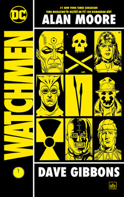
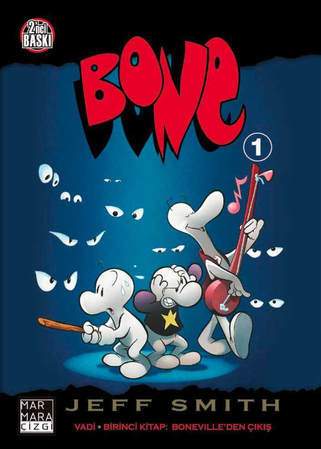
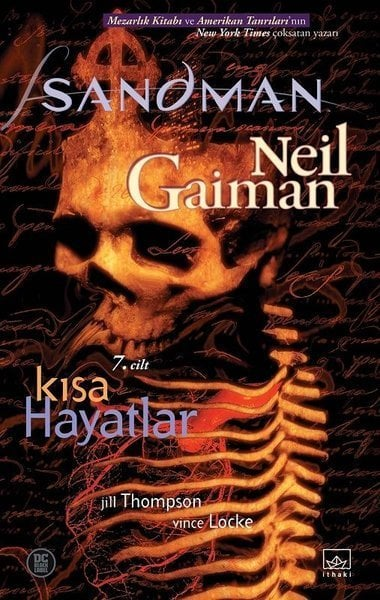
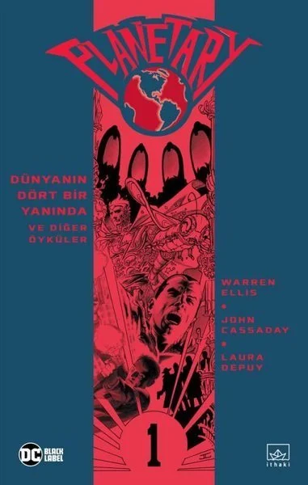
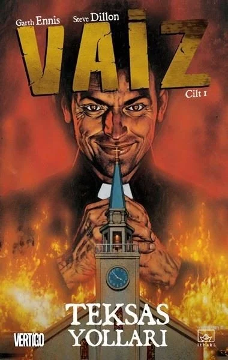
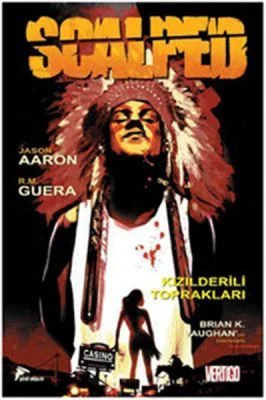

-

Watchmen
Kim Gözleyecek Gözcüleri?Seksenli yılların ortasında Alan Moore ve Dave Gibbons, çizgi roman tarihini kökten değiştiren ve popüler kültürün çizgi roman algısını yeni baştan yazan eşsiz bir eser yarattılar: WATCHMEN. Sıklıkla çizgi romanların ciddiye alınmasını sağlayan ilk eser olduğu söylenen WATCHMEN, süper kahramanların çok yönlülüğünü, psikolojik karakter derinliğini olabilecek en gerçekçi biçimde yansıtan yegâne eser.Amerikalı süper kahramanların varlığının bile tarihe farklı bir yön verdiği bir dünyada, Amerika Vietnam Savaşı'nı kazanmıştır, Nixon hâlâ başkandır ve Soğuk Savaş devam etmektedir. WATCHMEN bir cinayet öyküsü olarak başlasa da kısa sürede tüm gezegeni ilgilendiren bir komplonun izleri ortaya çıkar. Nihayetinde, tekrar bir araya gelmiş bu kahramanlar -Rorscach, Gece Kuşu, İpek Hayalet, Dr. Manhattan ve Ozymandias-s inançlarının sınırlarını zorlamak ve iyi ile kötünün çizgisinin nereye çizileceğini kendilerine sormak zorunda kalacaklardır.Bu edisyonda, eserin yaratılış sürecindeki daha önce yayınlanmamış çizim taslakları ve çizer Dave Gibbons'ın yeni önsözü de metinlere eşlik ediyor.
Yayınevi:İthaki Yayınları
Yazar:Alan Moore
Ebat:17x24
Kağıt:115 gr Parlak Kuşe
Sayfa Sayısı:320 Sayfa
Fiyat:200 tl
-

V For Vendetta
“Korkunçtu. Kimse Britanya’nın bombalanıp bombalanmayacağını bilmiyordu. Annemin, ‘Artık Afrika diye bir yer yok,’ dediğini hatırlıyorum. Ağzından çıkan tek şey buydu. Ölen bütün aslanları ve filleri düşününce ağladım. Sadece yedi yaşındaydım.” Yeryüzünün çehresini değiştiren korkunç bir savaş patlak verir... Özgürlük ve bireysellik namına ne varsa tarihe karışır...Politik özgürlükten eser olmayan bir dünyada kişisel özgürlüklere dair ne varsa, beyaz porselen maskeli ve gizemli bir adamın zorbalara karşı verdiği mücadeleye bağlıdır... İdeolojik iyilik ile kötülük arasındaki çizgilerin bulanıklaştığı baş döndürücü bir hikâye!
Yayınevi:JBC Yayıncılık
Yazar:Alan Moore
Ebat:17x24
Kağıt:70 gr Ivory
Sayfa Sayısı:396 Sayfa
Fiyat:325 tl
-

Essex County Özel Edisyon
Tüm dünyası aniden alt üst olan genç bir çocuk, neden medet umar? Ayrılmaz bir ikili olan iki erkek kardeşi, acı verici şekilde birbirlerinden uzaklaşmış iki yalnız insana dönüştürebilecek şey nedir? Orta yaşlı bir hemşirenin yaptıkları bütün bir toplumun yaralarını ortaya nasıl çıkarabilir ve yüz yıllık kaybın ve pişmanlığın açtığı bu yaraları herhangi bir şey iyileştirebilir mi?Büyük beğeni kazanan çizgi romancı Jeff Lemire, doğduğu Ontario kırsalının hayali bir versiyonunda geçen ödüllü çizgi roman üçlemesi ESSEX COUNTY’yle köklerine saygı duruşunda bulunuyor. Lemire, ESSEX COUNTY’de bir topluluğu yıllar boyunca yakından inceliyor ve aile, hatıralar, keder, sırlar ve barışmanın üstüne müşfik derin düşünceleri işliyor. Etkileyici ve ifade dolu çizgileriyle yeteneklerinin en üst noktasındaki genç bir çizer olan Lemire, bizi hikayenin içine çekiyor ve özgürlüğümüze kavuşturuyor.Bu yeni baskı, ESSEX COUNTY üçlemesini (ÇİFTLİKTEN ÖYKÜLER, HAYALET HİKAYELERİ ve KASABA HEMŞİRESİ) tek bir özel ciltte bir araya getiriyor!Ayrıca, bu baskının içinde daha önce yayınlanmamış eskizler, tanıtım çizimleri ve iki yeni hikaye de dahil olmak üzere 50 sayfadan fazla ilave içerik bulunmaktadır.
Yayınevi:Marmara Çizgi
Yazar:Jeff Lemire
Ebat:17x24
Kağıt:Kitap Kağıdı
Sayfa Sayısı:512 Sayfa
Fiyat:600 tl
-

Bone Cilt 1 Vadiden Çıkış
Boneville"den kaçmak zorunda kalan üç Bone kuzen, Fone Bone, Phoney Bone ve Smiley Bone, uçsuz bucaksız bir çölde kaybolurlar. Birbirlerini de kaybeden bu üç arkadaş, farklı yollardan da olsa, muhteşem ve korkunç yaratıklarla dolu bir vadiyi kaplayan ormanın içine ulaşır.Bu hayatlarının en uzun ve en eğlenceli yılı olacaktır...EN İYİ ÇİZER ve EN İYİ MİZAHİ YAYIN"ı kapsayan 11 adet Harvey ve 10 adet Eisner ödülü alan Bone National Cartoonists Society tarafından da EN İYİ ÇİZGİ ROMAN seçilmiştir.
Yayınevi:Marmara Çizgi
Yazar:Jeff Smith
Ebat:15x21
Kağıt:Kuşe
Sayfa Sayısı:144 Sayfa
Fiyat:45 tl
-

Black Hammer Cilt 1 Gizli Köken
EVE DÖNÜŞ YOK!Yaşanan bir çoklu-evren krizi sonucunda, var oldukları süper kahraman evreninden silinen Spiral City’nin unutulmuş kahramanları; kaçış imkanı olmayan bir evrende, küçük bir kasabadaki gizemli bir çiftlikte artık uyumsuz ve sorunlu bir aile gibi yaşamaktadır.
Yayınevi:Marmara Çizgi
Yazar:Jeff Lemire
Ebat:17x24
Kağıt:2.Hamur
Sayfa Sayısı:184 Sayfa
Fiyat:75 tl
-

Yürüyen Ölüler Cilt 1 Günler Sonra
Gün içinde televizyon başında geçirmediğiniz kaç saatiniz var? En son ne zaman gerçekten elde etmek istediğimiz bir şey için çabaladık? En son ne zaman gerçekten ihtiyacımız olan bir şey istedik? Bildiğimiz dünya artık yok. Ticari ve saçma ihtiyaçların dünyası yerini ölüm kalım savaşı ve sorumluluğa bıraktı. Mahşeri bir salgın ölülerin dirilip canlılarla beslenmesine yol açtı. Birkaç ay içinde toplum düzeni çöktü. Hükümet yok. Süpermarketler yok. Posta servisi yok. Kablo TV yok. Artık yaşamak zorunda kaldığımız dünya, ölülerin dünyası.
Yayınevi:Marmara Çizgi
Yazar:Robert Kirkman
Ebat:17x24
Kağıt:Kuşe
Sayfa Sayısı:144 Sayfa
Fiyat:52 tl
-

Sandman Cilt 7 Kısa Hayatlar
Tüm zamanların hem en popüler hem de eleştirmenlerce en çok beğenilen grafik romanlarından biri olan SANDMAN, çizgi roman dünyasında olgun ve lirik fantazinin dönüm noktası oldu. Mecranın en aranan sanatçılarının resimlendirdiği seri, modern ve antik mitolojilerin çağdaş kurgularla, tarihi dramalarla ve efsanelerle beraber dokunduğu zengin bir karışım.Tanrılardan çok daha güçlü olsalar da Sonsuzlar ailesi pek çok sorunla baş etmek zorunda olan problemli bir aileydi. Zamanın başlangıcından beri kozmosa yön veren bu yedi kardeşten biri üç yüz sene önce tüm sorumluluklarını ve kardeşlerini ardında bırakıp kayıplara karışmıştı. SANDMAN’in 7. cildi Kısa Hayatlar’da kayıp kardeş Yıkım’ı bulmak üzere yola çıkan Hezeyan ve Rüya’nın yol boyunca karşılaştığı maceralar anlatılıyor. Bunun yanı sıra oğlu Orfeus’la yüzleşip bir başka hikâyenin sonunu getiren Rüya da kaderin ve bedel ödemenin ne anlama geldiğini öğrenecekti.
Yayınevi:İthaki Yayınları
Yazar:Neil Gaiman
Ebat:16,5x26
Kağıt:Kuşe
Sayfa Sayısı:256 Sayfa
Fiyat:170 tl
-

Planetary Cilt 1 Dünyanın Dört Bir Yanında ve Diğer Öyküler
Efsane TRANSMETROPOLITAN serisinin yaratıcısı Warren Ellis PLANETARY’de modern süper kahraman geleneğini baştan aşağı değiştirerek tüm zamanların en sıradışı çizgi roman hikâyelerinden birini anlatıyor.Bu cilt, yüz yaşındaki bir adam, Elijah Snow’un, inanılmaz güçlü ve canı sıkkın bir kadın, Jakita Wagner’in ve makinelerle iletişim kurabilen Davulcu’nun maceralarını içeriyor. Süperinsan faaliyetlerini belirlemekle görevli bu gizem arkeologları diğer evrenlere erişebilen İkinci Dünya Savaşı dönemi süperbilgisayarı, intikamcı bir hayalet ve ölen canavarların olduğu kayıp bir ada gibi bilinmeyen paranormal sırları ve mazileri açığa çıkarıyor.
Yayınevi:İthaki Yayınları
Yazar:Warren Ellis
Ebat:16,5x26
Kağıt:Kuşe
Sayfa Sayısı:160 Sayfa
Fiyat:150 tl
-

Vaiz 1 Teksas Yolları
Jesse Custer küçük bir kasaba rahibiydi ve yavaş yavaş inancını kaybediyordu... ta ki yarı melek, yarı şeytan bir yaratık olan Yaratılış onunla birleşene dek.Eski sevgilisi Tulip ve İrlandalı alkolik bir vampir olan Cassidy ile birlikte Vaiz Jesse, Tanrı’yı bulmak için Teksas’ın yüreğinden New York’un kasvetli ruhuna doğru yolculuğa çıkacaktı.Çizgi roman tarihinin en önemli serilerinden biri olan VAİZ’in ilk cildi; hızlı, sert ve kara mizahla birleşmiş: Teksas Yolları, Garth Ennis ve Steve Dillon birlikteliğinin benzersiz bir ürünü.
Yayınevi:İthaki Yayınları
Yazar:Garth Ennis
Ebat:16,5x26
Kağıt:Kuşe
Sayfa Sayısı:224 Sayfa
Fiyat:170 tl
-

Scalped Cilt 1 Kızılderili Toprakları
On beş yıl önce Dashiell 'Dash' BadHorse, Çayır Gülü Kızılderili Yerleşkesi'ndeki sefil bir yoksulluk ve umutsuzluk dolu hayatı iyi bir şeyler bulma umuduyla terk edip gitti. Eve döndüğünde Yerleşke'de pek bir şeyin değişmemiş olduğunu gördü; tabi pırıltılı yeni kumarhaneyi ve bir zamanların gururlu halkının uyuşturucu ve organize suçların batağında olmasını saymazsak.Fırtına merkezinde Kabile Şefi RedCrow var. Bir zamanların 'Kızıl Güç'aktivistiyken artık bir suç lideri olan RedCrow, Lakota Kabilesinin 100 yıldır beyaz adam tarafından soyulup öldürülmesinin karşılığını verme zamanının geldiğini düşünüyor.Elinde bir çift nunçaku, pervasız bir tavır ve (en azından) bir karanlık sırdan başka bir şey olmayan Dash, kumar, silahlı çatışma, aynasızlar, köpek askerler, katliamlar, met lablar, adi seks, tava ekmeği, kızılderili gururu, gök gürültüsü, çorak arazinin hırçın güzelliği ve…hatta bir iki kafa derisinin yüzülmesinin arasında sağ kalmak zorunda.
Yayınevi:Çizgi Düşler
Yazar:Jason Aaron
Ebat:16x24
Kağıt:2.Hamur
Sayfa Sayısı:128 Sayfa
Fiyat:100 tl